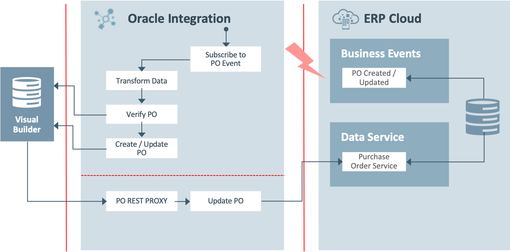
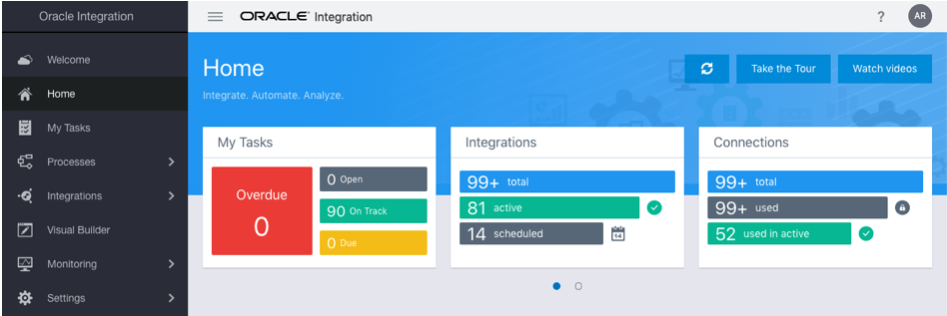

Oracle Integration - ERP Cloud Events Lab
Oracle Integration - ERP Cloud Events Lab
Before You Begin
Some steps in this tutorial have a  icon next to them. Click this icon to copy the snippet of text to your clipboard and then paste where needed.
icon next to them. Click this icon to copy the snippet of text to your clipboard and then paste where needed.
Your lab facilitator will provide you the following information to access the environments used in this lab.
OIC Environment
Select your OIC Environment:
OIC URL:
OIC User Name:
Your OIC Password will be provided by your lab facilitator.
ERP Cloud Environment
Select your ERP Cloud Environment:
ERP Cloud URL:
ERP Cloud User Name:
Your ERP Cloud Password will be provided by your lab facilitator.
Background
Oracle Integration provides native connectivity to Oracle and non-Oracle Software as a Service (SaaS) and On-premises applications, such as Oracle ERP Cloud, Oracle Service Cloud, HCM Cloud, Salesforce.com, Workday, EBS, SAP, NetSuite and so on. Oracle Integration adapters simplify connectivity by handling the underlying complexities of connecting to applications using industry-wide best practices. You only need to create a connection that provides minimal connectivity information for each system.
Use Case
This use case explores the use of Oracle Integration to subscribe to Oracle ERP Cloud Events and push the relevant event information to downstream systems. As part of the lab you would be building the below use case scenario.
- User creates a Purchase Order(PO) in ERP Cloud and a PO event is raised (Flow1).
- Oracle Integration subscribes to the PO event, transforms and pushes the relevant information to a custom table (VBCS) (Flow1).
- User attaches Letter of Credit (LOC) information to the PO record from the VBCS Web App (Flow2).
- PO Record in ERP Cloud is updated with the LOC information in ERP cloud (Flow2).
The following diagram illustrates the proposed interaction between the systems involved in this use case. There 2 flows to complete this use case.

Sign In
Access to Oracle Integration is secured through Oracle Identity Cloud Service. Users may be granted access to all the Oracle Integration environments in a cloud tenancy, or they may be restricted to specific environments. They may be assigned different roles in each environment.
Open a browser to the OIC URL.
OIC URL:
Enter your OIC User Name.
OIC User Name:
Enter your OIC Password provided by your lab facilitator and click Sign In.
The Welcome page appears. Check out the tour, videos, and links to learn more. Keep scrolling to find more useful links.
Click Home.
The Home page displays an overview with the current state of your instance. You can drill down to get information about available Processes, Integrations, and Visual Applications.

You are now logged in and ready to use Oracle Integration.
Documentation
You will find additional documents and assets needed to complete this lab below.
- ERP Cloud Events Lab Guide
-
Please enter your user number above to access your download
- XpathExpr.txt